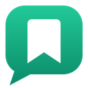

Privacy Policy
WhatsApp Bookmarks
Last updated: 12 November 2026
Summary
WhatsApp Bookmarks keeps everything you save on your own device. It has no account, no server of its own, no analytics and no ads. The developer never receives your messages, files or any other data.
This extension is an independent project. It is not affiliated with, endorsed by, or sponsored by WhatsApp or Meta.
What the extension stores
When you choose Bookmark on a message in WhatsApp Web, the extension saves the following, only for that message:
- the message text, sender name, chat name, date and time shown on screen;
- any voice note, video, image or file you bookmarked (up to 25 MB each);
- for a shared contact you bookmarked, the contact's name and phone number(s);
- the collection name and the optional label you entered.
It does not read, copy or store messages you have not chosen to bookmark.
Where it is stored
Bookmarks are stored in the extension's own local database (IndexedDB) inside your Chrome profile on your computer. They are not synced, uploaded or shared. Anyone who can use your Chrome profile on this computer can view them.
Network access
The extension runs only on https://web.whatsapp.com. It sends no data to the developer or to any third party. The only network requests it makes are to WhatsApp's own servers, to read the media attached to a message you chose to bookmark, in the same way WhatsApp Web itself loads that media.
How media is copied
To copy a bookmarked voice note, video or file, the extension briefly observes the media player or download link of the message you selected, and only while the bookmark dialog is open. It then stops observing. Playback is silent and restored afterwards, and a file download is read by the extension instead of being saved to your Downloads folder.
Permissions
- Access to web.whatsapp.com — to add the Bookmark option and the bookmarks pane, and to read the message you choose to save.
- contextMenus — to add a "Bookmark this WhatsApp message" entry to Chrome's right-click menu on WhatsApp Web.
- unlimitedStorage — so saved voice notes, videos and files are not rejected by the default browser storage quota.
What the extension does not do
- No analytics, telemetry, advertising or tracking.
- No selling or sharing of data, and no use of data for purposes unrelated to saving your bookmarks.
- No remote code: all code ships inside the extension package.
- No calls to WhatsApp's private application APIs, no use of your credentials, and no access to your address book or contacts list. To save a shared contact you bookmarked, the extension reads that one contact card (name and phone number) from the page data WhatsApp Web has already loaded.
Debug report
The optional Copy debug info button copies a technical report to your clipboard, only when you click it. It contains structural information such as selector counts and capture status, and excludes chat names, message contents, message IDs and media. It is never sent anywhere automatically.
Your control
You can remove any bookmark inside the extension. To delete everything, uninstall the extension or clear its site data in Chrome; this permanently deletes all saved bookmarks.
Children
The extension is not directed at children and does not knowingly collect personal information from anyone.
Changes to this policy
If this policy changes, the date at the top of this page will be updated and the change recorded in the project's changelog.
Contact
Questions about this policy can be raised by opening an issue in the project's repository.